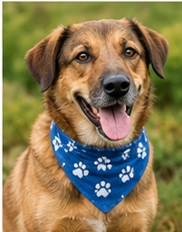
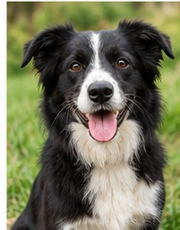
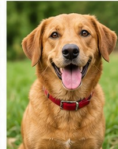
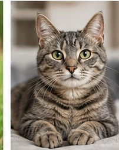
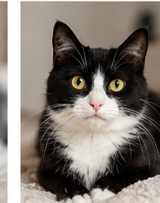
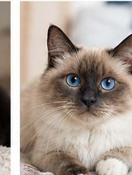

Luna
- Zona
- Centro de La Plata
- Fecha
- 12 de agosto de 2026
- Características
- Mestiza, tamaño mediano, pelaje marrón y blanco. Lleva collar rojo.
Encontrarlos es el objetivo
Consultá los avisos de perros y gatos perdidos. Cada ficha contiene información para ayudar a encontrarlos.
Buscá por categoría
Seleccioná una opción para visualizar los avisos correspondientes.
Seleccioná Perros o Gatos para ver los avisos.
Categoría seleccionada



Categoría seleccionada


